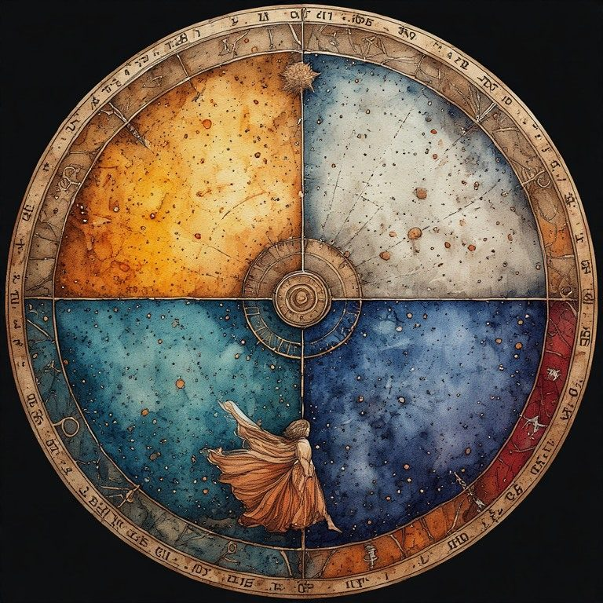
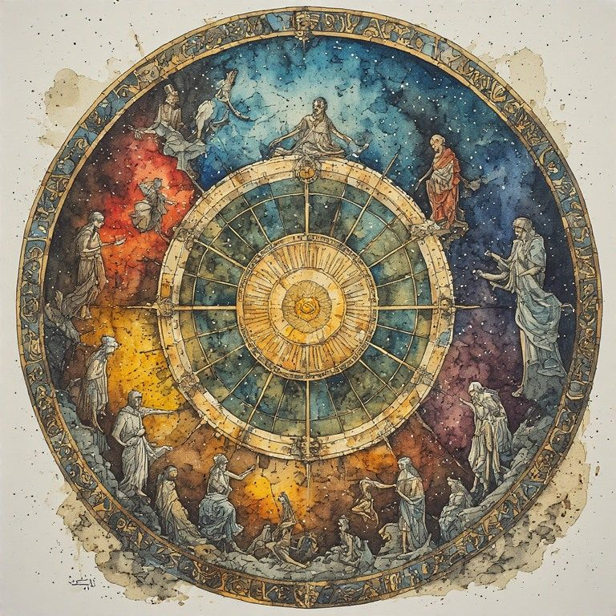

Part Three: The Wheel
← Part Two: The Sediment · Radical Immanence Collection · Part Four: The Not-Yet-Born →
In 524 AD, a philosopher named Boethius was imprisoned and sentenced to death for a crime he probably did not commit. He had been one of the most powerful men in Rome. In his cell, stripped of everything on the horizontal axis, he wrote one of the most widely read books of the medieval period.
The standard reading of that book: fortune is unstable, so do not cling to wealth and power. The wheel turns. What rises must fall.
There is a different reading. Boethius's imprisonment was a rotation. When everything on the horizontal axis was stripped away, he was forced to orient himself along the vertical axis instead. In the cell, he could no longer ask, what have I built? He had to ask what am I made of? What do I carry? What is the transmission?
The cell did not destroy him. It reoriented him. And what he found at that reorientation could not be taken away by fortune, because it was not on the wheel's rim. It was the axis the wheel rotated around.

The Four Positions
Medieval manuscripts depicted the Wheel of Fortune with four figures at four positions: rising, at the top, falling, at the bottom. Fortune, depicted as a blindfolded woman, turns the crank without caring who rises or falls.
Read differently, the four figures are the same person at four orientations. At the top, spread wide on the horizontal axis, accumulating power and relationships and the things that make a life feel large and full. On the right, beginning to rotate. At the bottom, fully oriented on the vertical axis, stripped of horizontal accumulation, standing directly on the transmission line. On the left, rotating back toward horizontal.
The figure at the bottom is not the failure. It is the person most fully in contact with the crossing point. Most aware of what they received and what they are passing forward. Least distracted by the accumulations of the horizontal axis.
Young’s interpretation of Boethius’s Wheel transforms it from a simple "luck of the draw" cycle into a profound map of spiritual and psychological orientation. By viewing the four figures as one person rotating through different states of being, the visual geometry tells a deeper story:
1. The Zenith: The Horizontal Life (Regno) At the top, the figure is "spread wide." This is the peak of expansion. The Orientation: Horizontal. You are gathering "breadth": influence, wealth, family, and social standing. The Feeling: Fullness. The ego is at its most distributive, touching many things at once. However, because you are at the outer rim, you are also moving at the highest velocity, making the position the most precarious.
2. The Descent: The Turning Point (Regnavi) On the right, the rotation begins. The horizontal line starts to tilt. The Orientation: Diagonal/Transition. The things you accumulated begin to slip or lose their luster. The Feeling: Gravity. You are losing your grip on the external "stuff" of life as the wheel pulls you toward a different axis.
3. The Nadir: The Vertical Life (Sum sine regno) At the bottom, the figure is stripped of all horizontal reach. There is no "width" left, only height (or depth). The Orientation: Vertical. You are perfectly aligned with the "transmission line": the central spoke or the divine axis. The Feeling: Essentialism. Without the distraction of power or relationships to prop you up, you stand directly on the source. "True Good" is found because there is nothing left to lose but oneself.
4. The Ascent: Re-Integration (Resurgam) On the left, the figure begins to rotate back toward the horizontal. The Orientation: Emerging. You are moving back toward the world of "things," but with the memory of the vertical axis still fresh. The Feeling: Renewal. You begin to rebuild a life, potentially with a better understanding that the horizontal world is temporary and the vertical center is the only constant.
The Blindfolded Turner in this reading: Fortune’s blindfold isn't just about unfairness; it's about impartiality. She turns the crank to ensure no one stays purely horizontal forever. She forces the rotation that periodically strips us of our "fullness" so that we are forced to stand, however briefly, on that vertical transmission line.
The wheel turns. The crossing point does not turn. It holds.
Your Own Rotations
You have probably been through at least one major rotation. A loss that stripped the horizontal axis bare. A period when the things that had organized your life fell away and you were left with something more fundamental. An illness, a grief, a failure, a dissolution that felt like the bottom of the wheel.
Those periods are not only losses. They are also, sometimes, the closest you have come to the crossing point. When you could not ask what have I built, you had to ask what am I made of. That question, asked in earnest, is the vertical axis opening.
This is not a consolation for loss. Loss is real and the bottom of the wheel is genuinely hard. But something is also available there that is not available at the top. A different kind of orientation. A contact with the transmission line that the accumulations of the horizontal axis can actually obscure.
| The wheel turns. You have been at different points on it. The crossing point, the axis, was present at all of them. It did not turn when the wheel turned. It held then. It holds now. |
|---|
Where are you on the wheel right now? What has this position made visible that the other positions did not?
What the Rotation Teaches
Every major rotation teaches something that the stable periods cannot. Not because suffering is instructive in some neat, purposeful way. But because the horizontal accumulations genuinely do obscure the vertical axis. When you are busy building, it is easy to forget what you are building on. When you are busy accumulating, it is easy to forget what you are carrying.
The rotation strips that away. Not kindly. But completely.
What do people find at the bottom of the wheel? Not always peace. Not always clarity. But often: a sense of what is actually here, underneath the accumulated structure of a life. A contact with the transmission line. A felt sense of being connected to something that does not depend on the current configuration of circumstances.
That is the crossing point. It was always there. The rotation made it visible.
What did a hard period in your life strip away? What became visible in the stripping that had been hidden before?
Here Is Enough.

Cite this page: Russell, Coral. “Part Three: The Wheel.” The Marguerite Young Society, updated October 29, 2026. https://marguerite-young-society.coralrussellbooks.workers.dev/collection-04-04-part-three-the-wheel